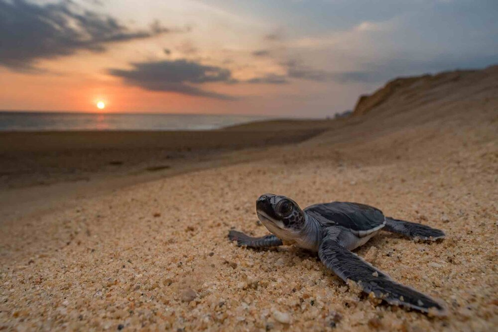
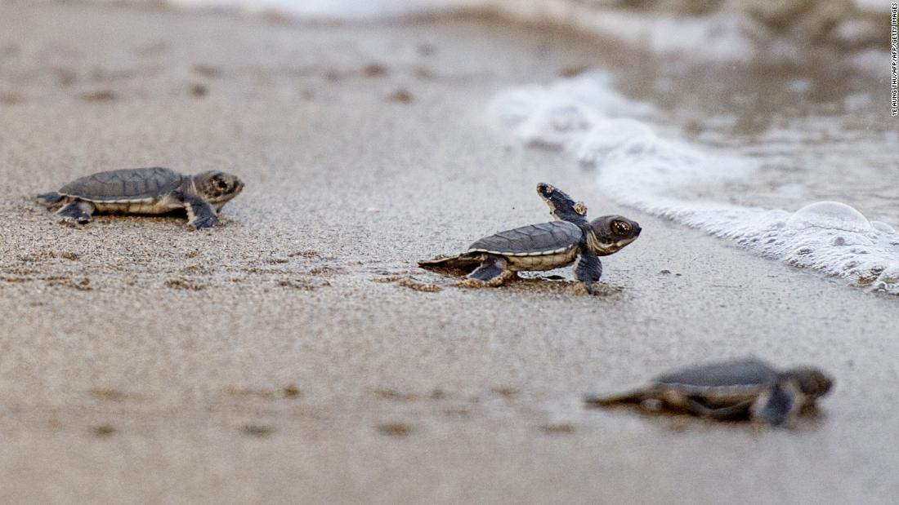
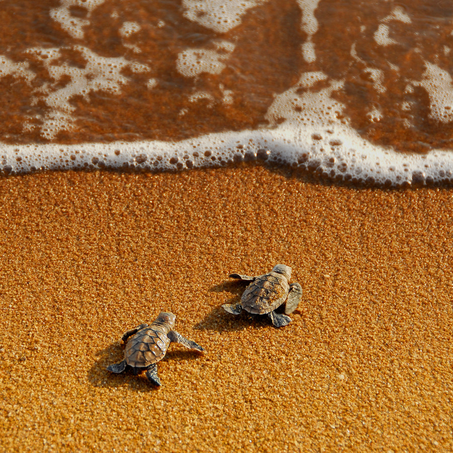

B E N T O T A
TURTLE HATCHERY

Introduction to Bentota Turtle Hatchery in Sri Lanka
The Bentota Turtle Hatchery is a renowned conservation center located in the coastal town of Bentota in Sri Lanka.
It serves as a vital sanctuary for endangered sea turtles and plays a significant role in their protection and preservation.
Here is some information about the Bentota Turtle Hatchery:
1. Location and Background:
The Bentota Turtle Hatchery is situated along the beautiful southwestern coast of Sri Lanka, in close proximity to Bentota Beach.
The hatchery is strategically located to ensure the safety and well-being of sea turtles that frequent the nesting grounds in the area.
With its idyllic beachfront setting, the hatchery provides an ideal environment for the successful incubation and release of sea turtle hatchlings.
2. Mission and Objectives:
The primary mission of the Bentota Turtle Hatchery is to conserve and protect endangered sea turtle species that are native to Sri Lanka's coastal waters.
The hatchery aims to safeguard sea turtle nests, provide a safe haven for eggs to hatch, and ensure the survival of hatchlings as they make their journey into the ocean.
Additionally, the hatchery focuses on raising awareness about the importance of sea turtle conservation and the threats faced by these majestic creatures.
3. Conservation Efforts:
The Bentota Turtle Hatchery actively engages in conservation efforts to protect sea turtles at various stages of their life cycle.
The hatchery monitors nesting activities and safeguards turtle nests from predators and human disturbances.
Dedicated staff members carefully collect eggs from vulnerable nests and relocate them to protected areas within the hatchery for incubation.
Once the eggs hatch, the hatchlings are given the best possible start in life before being released into the sea.
4. Educational Initiatives:
The Bentota Turtle Hatchery provides educational programs and opportunities for visitors to learn about sea turtles and their conservation.
Visitors can participate in guided tours where they gain insights into the biology, behavior, and life cycle of sea turtles.
Through interactive exhibits and informative displays, visitors can deepen their understanding of the challenges faced by sea turtles and the importance of their conservation.
The hatchery also conducts workshops and presentations to raise awareness among visitors, schools, and local communities about the need to protect these endangered species.
By visiting the Bentota Turtle Hatchery, individuals have the chance to witness the incredible journey of sea turtles, contribute to their conservation, and learn how they can make a positive impact on preserving these magnificent creatures for future generations.
Turtle Conservation and Rehabilitation at Bentota Turtle Hatchery in Sri Lanka
The Bentota Turtle Hatchery in Sri Lanka is dedicated to the conservation and rehabilitation of sea turtles, playing a crucial role in protecting these endangered species.
Here is some information about the turtle conservation and rehabilitation efforts carried out at the hatchery:
1. Nest Protection and Management:
The Bentota Turtle Hatchery focuses on safeguarding sea turtle nests to ensure the survival of the eggs and hatchlings.
Staff members closely monitor nesting activities and identify vulnerable nests to protect them from natural predators and human interference.
Nest relocation is practiced when necessary, with eggs carefully collected and transported to a safe and controlled environment within the hatchery.
2. Incubation and Hatching:
The collected sea turtle eggs are transferred to specially designed incubation areas within the hatchery.
The hatchery ensures optimal conditions, including temperature and humidity, to promote successful incubation and hatching.
Trained staff regularly monitor the incubation process, providing the necessary care and attention to maximize hatchling survival rates.
3. Release of Hatchlings:
Once the sea turtle hatchlings emerge from their eggs, the Bentota Turtle Hatchery organizes release programs.
Visitors are often given the opportunity to participate in these releases, where they can witness the hatchlings' journey from the hatchery to the ocean.
These releases contribute to the conservation efforts by increasing the number of hatchlings that successfully reach the sea, enhancing the overall population of sea turtles.
4. Rehabilitation of Injured or Sick Turtles:
The Bentota Turtle Hatchery has a dedicated facility for the rehabilitation of injured or sick sea turtles.
Injured turtles are often brought to the hatchery by concerned individuals or fishermen who encounter them in distress.
Trained staff at the hatchery assess the turtles' condition, provide medical treatment, and create suitable environments for their recovery.
The goal of rehabilitation is to nurse the turtles back to health, addressing injuries and illnesses, before releasing them back into their natural habitat.
5. Research and Conservation Initiatives:
The Bentota Turtle Hatchery actively engages in research initiatives to better understand sea turtle populations, nesting patterns, and conservation needs.
The hatchery collaborates with local and international organizations to contribute to scientific studies and conservation efforts.
By gathering data and knowledge, the hatchery aims to implement effective strategies for the long-term preservation of sea turtles in Sri Lanka's coastal ecosystems.
The Bentota Turtle Hatchery's dedication to turtle conservation and rehabilitation demonstrates its commitment to protecting these vulnerable species.
Through nest protection, incubation, hatchling releases, and rehabilitation programs, the hatchery contributes significantly to the conservation of sea turtles in Sri Lanka.

Visitor Experiences and Educational Programs at Bentota Turtle Hatchery in Sri Lanka
The Bentota Turtle Hatchery offers a range of engaging visitor experiences and educational programs that provide valuable insights into the world of sea turtles and promote conservation awareness.
Here is some information about the visitor experiences and educational programs available at the hatchery:
1. Guided Tours:
The hatchery offers guided tours led by knowledgeable staff who provide informative commentary about sea turtles and their conservation.
During the tour, visitors can learn about the different species of sea turtles found in Sri Lanka, their life cycles, and the threats they face.
Guides share fascinating facts, stories, and conservation practices implemented at the hatchery, making the tour both educational and engaging.
2. Hatchery Visit and Hatchling Releases:
Visitors have the opportunity to visit the hatchery and witness various stages of the sea turtle conservation process.
They can observe the nesting areas, incubation facilities, and learn about the techniques employed to protect and nurture sea turtle eggs.
Depending on the timing of their visit, visitors may have the chance to witness the release of hatchlings into the ocean, contributing directly to their survival.
3. Interactive Exhibits and Displays:
The Bentota Turtle Hatchery features interactive exhibits and displays that provide educational information about sea turtles and their conservation.
These exhibits often include informative panels, photographs, videos, and artifacts that showcase the biology, behavior, and challenges faced by sea turtles.
Visitors can explore at their own pace, learning about topics such as nesting habits, threats from human activities, and conservation efforts.
4. Educational Workshops and Presentations:
The hatchery conducts educational workshops and presentations for visitors, schools, and local communities.
These sessions cover a wide range of topics related to sea turtles, including their ecological importance, conservation challenges, and ways individuals can contribute to their protection.
The workshops often include interactive activities and demonstrations to enhance learning and engagement.
5. Volunteer Programs:
The Bentota Turtle Hatchery provides opportunities for visitors to actively participate in conservation efforts through volunteer programs.
Volunteers may assist in various tasks, such as nest protection, hatchery maintenance, and educational activities.
This hands-on experience allows individuals to make a direct impact on sea turtle conservation while gaining valuable insights into their behavior and conservation needs.
Through these visitor experiences and educational programs, the Bentota Turtle Hatchery aims to inspire and educate visitors about the importance of sea turtle conservation.
By engaging with the hatchery's initiatives, visitors can develop a deeper understanding of the challenges faced by sea turtles and be encouraged to contribute to their protection in their own lives and communities.
Educational Initiatives at Bentota Turtle Hatchery in Sri Lanka
The Bentota Turtle Hatchery is committed to raising awareness and promoting education about sea turtles and their conservation.
The hatchery offers various educational initiatives to engage visitors, schools, and local communities.
Here is some information about the educational programs and initiatives at the Bentota Turtle Hatchery:
1. Guided Educational Tours:
The hatchery provides guided educational tours led by knowledgeable staff who offer in-depth information about sea turtles.
During the tours, visitors learn about the different species of sea turtles found in Sri Lanka, their life cycles, and nesting habits.
Guides explain the hatchery's conservation efforts, highlighting the importance of protecting sea turtle nests and the challenges they face in the wild.
2. Interactive Exhibits and Informational Displays:
The Bentota Turtle Hatchery features interactive exhibits and displays that provide educational information about sea turtles.
These exhibits showcase various aspects of sea turtle biology, conservation, and the impact of human activities on their populations.
Visitors can engage with interactive displays, view informative panels, and explore visual materials to deepen their understanding of sea turtle conservation.
3. Workshops and Presentations:
The hatchery conducts workshops and presentations on sea turtle conservation for visitors, schools, and local communities.
These educational sessions delve into topics such as the ecological importance of sea turtles, threats they face, and conservation strategies.
Through interactive activities, demonstrations, and multimedia presentations, participants gain a comprehensive understanding of the challenges and solutions related to sea turtle conservation.
4.Outreach Programs:
The Bentota Turtle Hatchery actively engages in outreach programs to raise awareness and educate local communities about sea turtle conservation.
These programs may include visits to schools, community centers, and other organizations to deliver presentations and educational materials.
The hatchery collaborates with local stakeholders to promote environmental stewardship and foster a sense of responsibility towards the protection of sea turtles and their habitats.
5.Volunteer Opportunities:
The Bentota Turtle Hatchery offers volunteer programs, allowing individuals to actively participate in sea turtle conservation efforts.
Volunteers can assist with various tasks, such as nest monitoring, hatchling releases, educational activities, and beach clean-ups.
Through volunteering, participants gain hands-on experience and a deeper connection to the conservation work, fostering a sense of personal responsibility and empowerment.


The educational initiatives at the Bentota Turtle Hatchery aim to inspire and empower individuals to take action for the conservation of sea turtles.
By providing informative tours, interactive exhibits, workshops, and volunteer opportunities, the hatchery fosters a greater understanding of the importance of sea turtle conservation and encourages a commitment to protect these magnificent creatures and their fragile habitats.